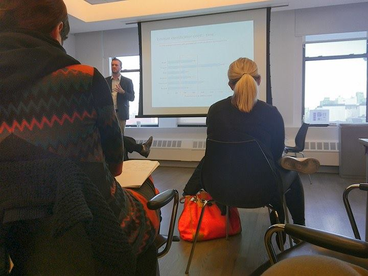

What our brain hears
Marc Pell, Ph.D’s presentation Vocal Communication of Emotions and Beyond
(2016. nov 22.)
Marc Pell, Ph.D from the School of Communication Sciences and Disorders, McGill University gave a speech on the vocal communication of different emotions at NYU Steinhardt for a good two dozens of attendees on the 22th of November.
The talk, that mainly concerned how the brain processes emotional cues embedded in vocal expressions, was based on Pell’s extensive research and experiments on the topic. The visiting professor had conducted experiments in English and in Hindi with the participation of more than a hundred subjects.
“When I started working on this field in the nineties, there were around two papers in journals about the topic. These years there are hundreds.” Pell said about his field, that didn’t enter the scientific mainstream until very recently.
He is mainly concerned with how the brain processes different emotions and mental states and how quickly. He divides the brain process into three parts: acoustic processing, detecting emotional cues, and finally cognitively processing the sound we heard. Signs of happiness, like laugher register quicker, while other emotions, like disgust take longer for the brain to sink in.
Pell also found during his research that non-linguistic sound patterns such as screams and laughter are more easily recognizable than linguistic ones. He also examined differences between languages, and found that while most patterns are the some, some emotions can take longer to recognize in certain ones.
“In English, for example, the signs of joy tend to be more discreet compared to Hindi, thus harder for the brain to recognize” he said.
The audience consisted of alumni and students well-versed in the topic. Occasionally the presentation was interrupted by questions from them, and every once in a while, the presenter paused to encourage these questions. The speech ended with a Q&A about Pell’s research.
The talker also laid out some of his plans for future research, which will mainly concern applying his findings to social contexts and analyzing speaking techniques used in podcasts.
Instagram Go Back
Go Back